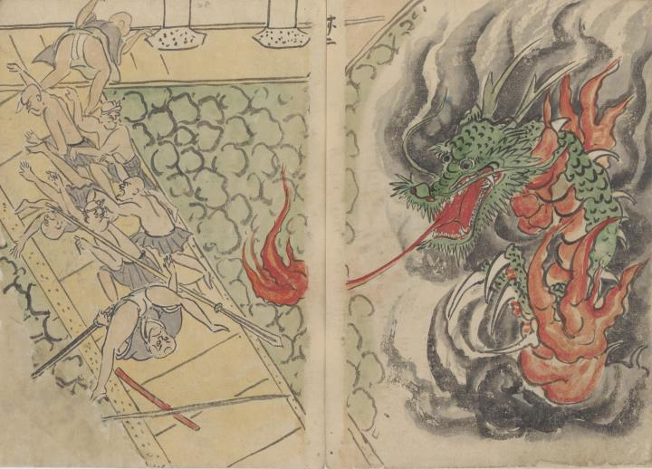

炎をまとった龍が僧兵たちを襲う。その鱗は緑色で、蛇腹は赤い。
出典：親書誌：U426_nichibunken_0304：日高川鐘巻道成寺縁起；ヒダカガワ カネマキ ドウジョウジ エンギ／日付：2014／資源識別子：U426_nichibunken_0304_0007_0000
Copyright (c)2010- International Research Center for Japanese Studies, Kyoto, Japan. All rights reserved.